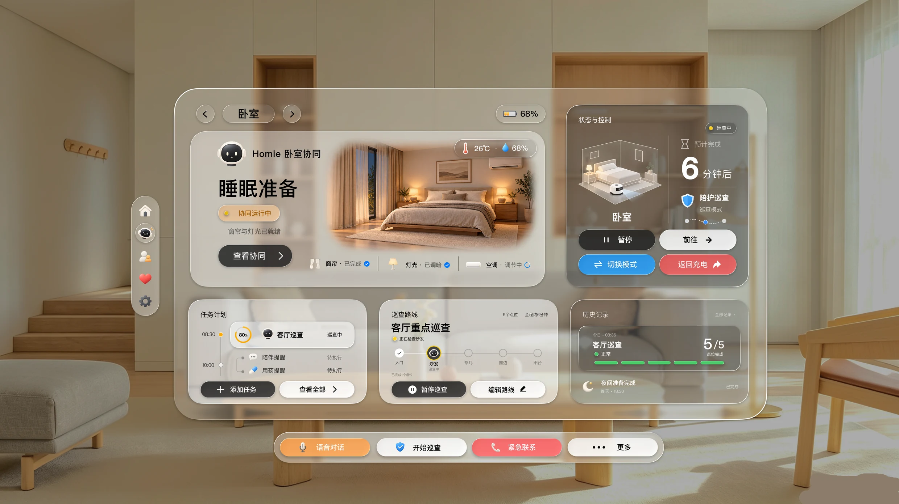
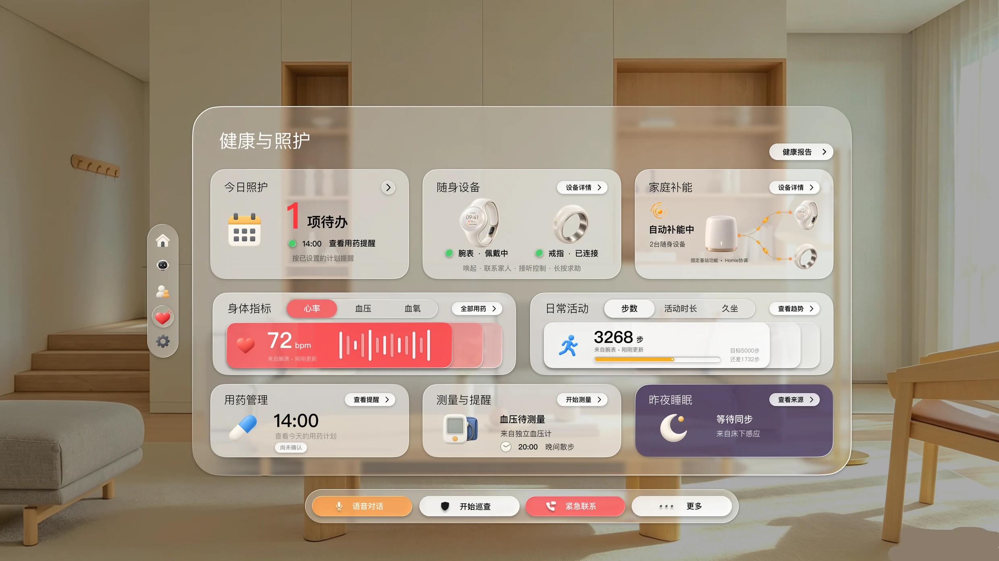
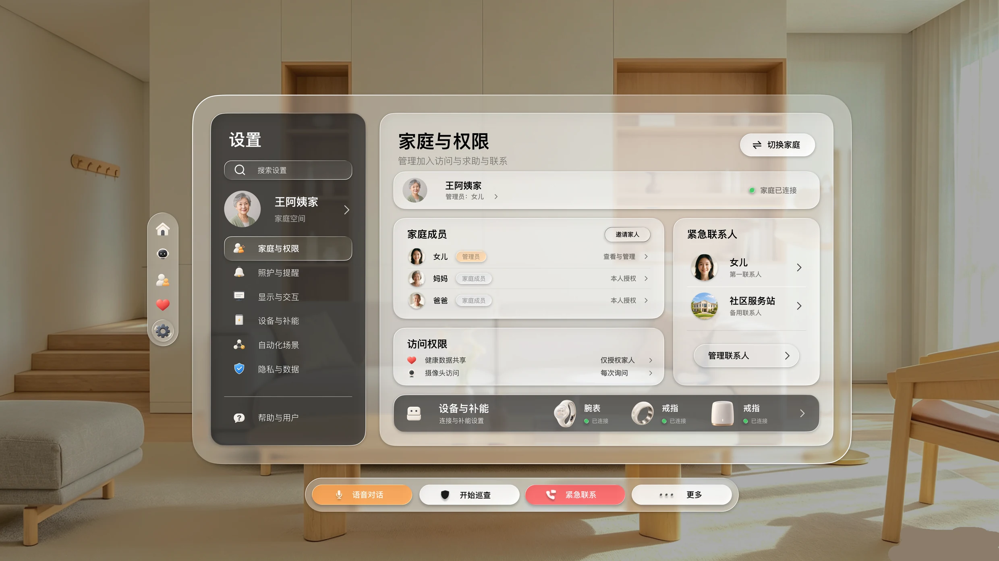

← 返回全部作品
智能硬件
Homie
一句话之后，老人要看得懂
给居家老人做的家庭照护机器人概念。我把「听到一句话之后会发生什么」拆成联系家人、调灯和出错三条线，画了老人端投屏和子女端的界面。概念稿，没找真实老人测过。
一句话说完，老人还是不知道它会做什么
奶奶说「帮我联系女儿」。机器人听懂了没有，要打给谁，打错了能不能停——这三件事，原来的界面上都没有。
我做的是把系统里已经发生的事，翻成老人看得懂的一步：听清了什么、接下来做什么、怎么退回去。

机器人该在哪些时刻出现
从起床到睡觉，我只挑真正需要它开口的时刻，其他时间留白。
起床
提醒今天要做的事，老人可以晚点再看。
用药
说清现在吃什么、几点吃；记录怎么留还没想好。
出门与回家
提醒带好随身设备；自动开门只是设想。
联系家人
先显示联系人，等人确认再拨。
晚饭
留着日常入口，不打断老人自己的节奏。
睡觉
睡前看一眼灯和门锁；夜里出状况怎么处理还没定。

拨号前，先让老人看见打给谁
最早画的是点一下就拨出去。画完发现，老人看不到对方是谁，按错了也追不回来。
- 直接拨出：少一步，但对方可能已经接到电话。
- 打开联系人列表：适合临时换人，但要老人自己找。
- 先显示称谓和头像，再按「拨出」：多一步，能在按下之前改。
机器人、腕表、戒指、手机，各管一段
四个设备不是同一套功能的复制品，每个只负责一段。
- 老人决定打不打，家人决定接不接，两头都留着操作权。
- 通话里的摄像头和麦克风，权限要分开给。
- 灯没有真的关掉，界面就不能显示「已关闭」。


取消、没人接、没说清，各长什么样
通话不是成功和失败两种状态。等的时候取消、接通后挂断、留言发出去了没回音，都得说清楚。
- 语音没听清：告诉老人要重说，同时给一个能点的替代入口。
- 正在呼叫：说明在等对方接，取消键一直在。
- 没人接：可以重拨、留言，或者退回去。
- 留言不确定有没有发出：先核对同一条，别重复发。


老人端投屏的五张主界面
家庭协同、机器人巡查、家居控制、健康照护、家庭权限。



做到哪一步
界面和流程是完整的。但没找过真实老人测试，硬件也没做出来。
- 做完的：概念、老人端投屏、子女端、穿戴设备和基站方案。
- 没做的：真实老人测试、语音识别、投影硬件、跨设备联动。
- 下一步想测两件事：字看得清吗，取消找得到吗。
 智审 · AI 指出来，人来核
智审 · AI 指出来，人来核 微律 · 先把事情说清楚，再谈法律
微律 · 先把事情说清楚，再谈法律